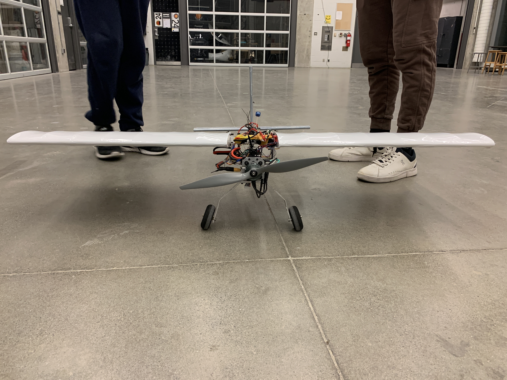
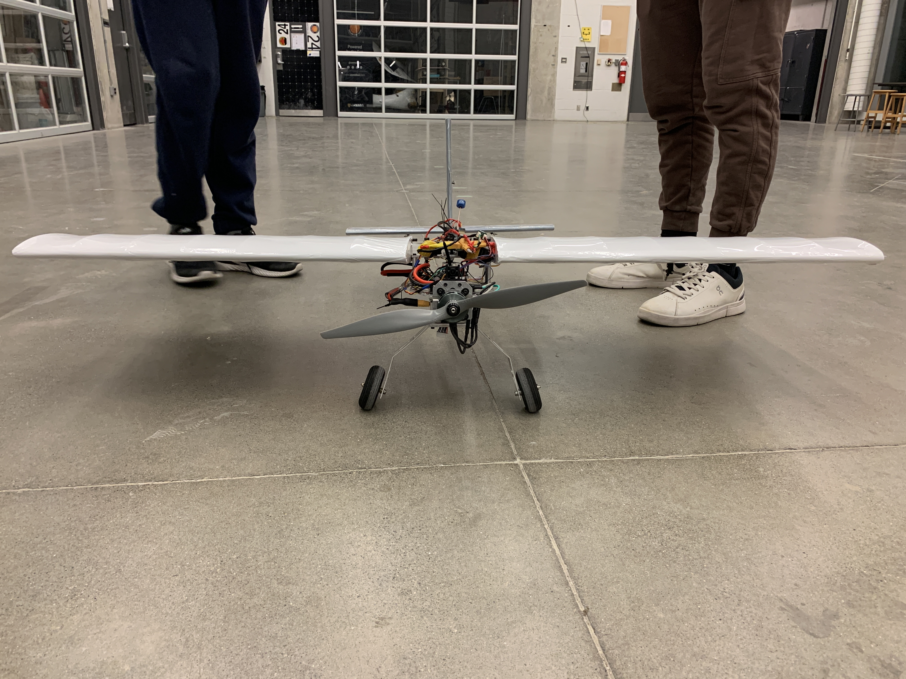
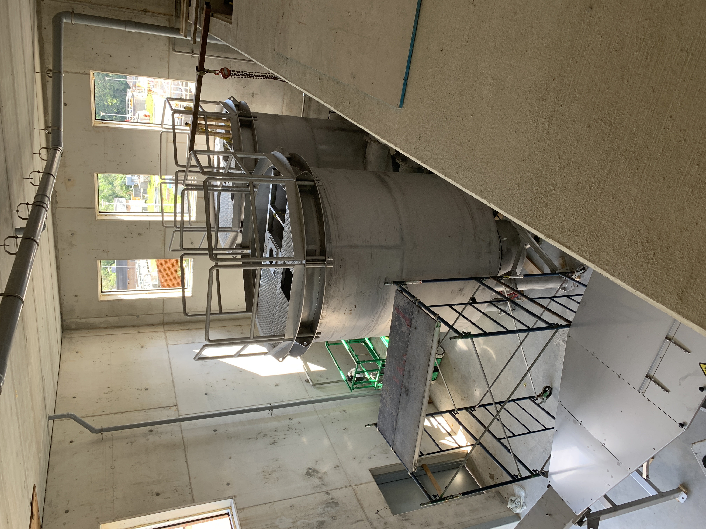
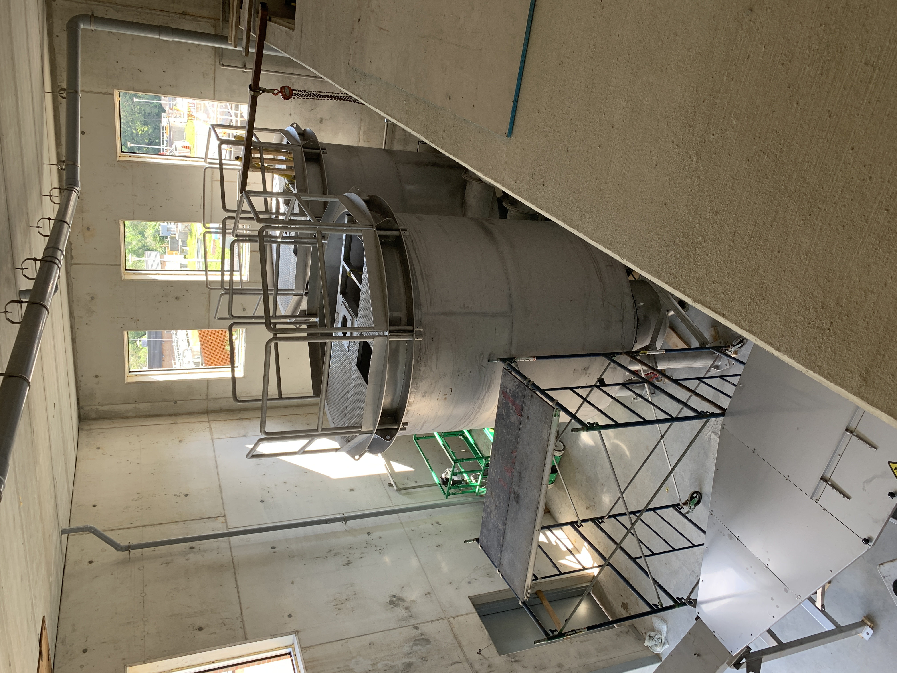
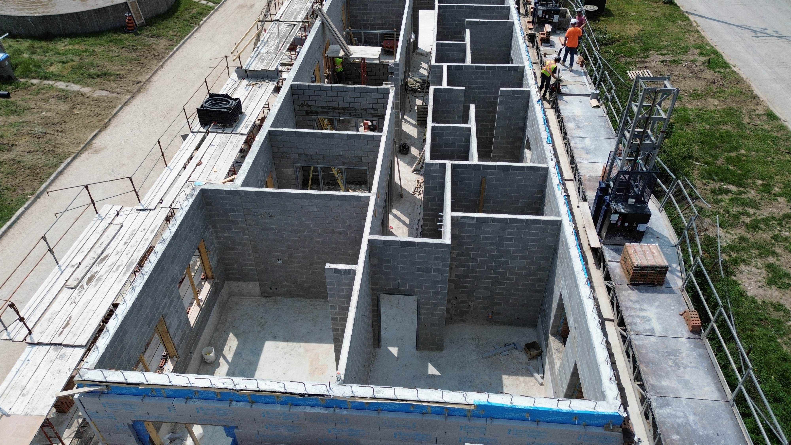
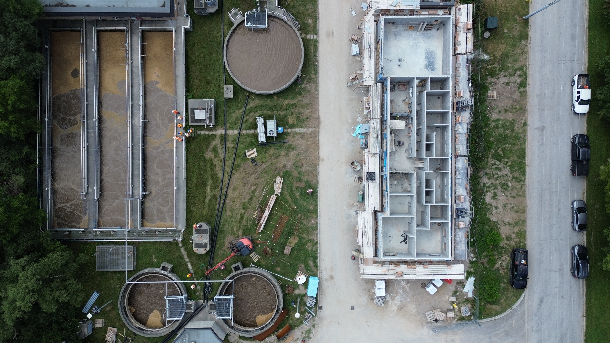
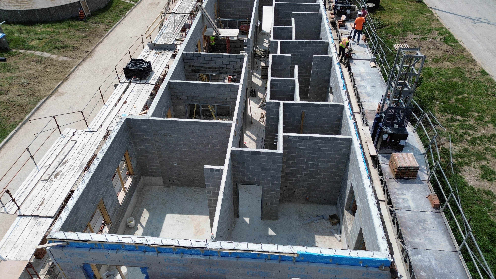
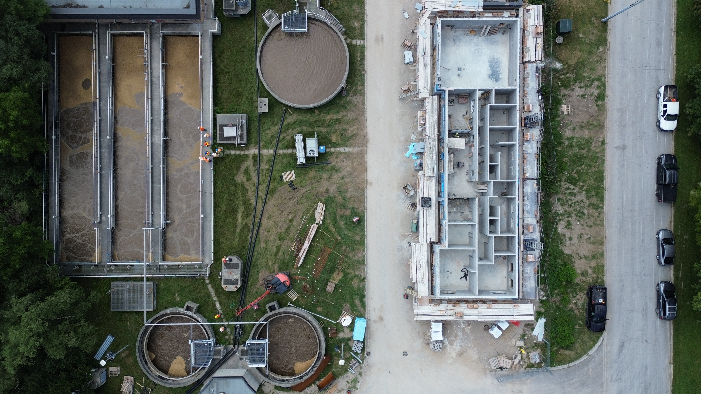

Waterloo Aerial Robotics Group - Mechanical Design Team Member
- Designed drone casing for flight controllers and landing gear, and created part drafts to aid in manufacturing using SOLIDWORKS
- Helped create fuselage and wings for fixed-wing airplane by manufacturing aluminum parts with mill, laser cutting wooden ribs, and assembling wings
- Made angled carbon fibre panels for drone using wet layup technique
- Designed IR camera / raspberry pi mount for existing frame, with rubber grommets to be friction fit onto drone
- Aided in assembly of 3.8 kg fixed wing plane by wrapping wings in ultracote, modifying landing gear, and aiding in harnessing of electronics


 


H2Ontario - Laborer
- General work at Pumping Station in Waterloo, Wastewater Treatment Plant in St Marys, and Water Treatment Plant in Port Dover
- Fused HDPE pipe system over 200 ft long, providing temporary bypass of plant's headworks building and aided in construction of steel piping system for flocculation tanks
- Used Leica Total Station to layout road marks, curbs, hydro, and building components, as well as estimate volumes of dirt piles
- Used drone for site photography and to get images of rooftop layouts
- Filled air filter tank with 93 000 kg of media, worked on PVC pipe humidifier system for filter

 

 


